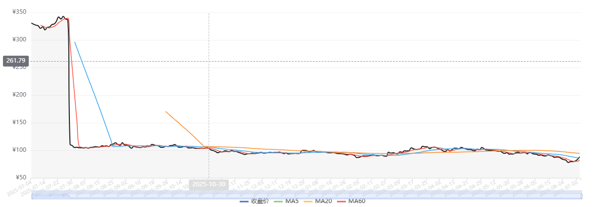

Task1 · 量化交易基础报告
武汉大学金融商业数据分析 · 课程作业一
1.相较于传统手工操作交易的方法，量化交易有哪些优势？
量化交易可以基于历史数据和统计模型进行决策，杜绝了直觉和经验的随机性；程序自动执行，响应较快；不会受到人的情绪波动的影响；一个系统可以同时对接多个市场。
2.了解以下基本概念并解释：K 线，基本面，技术面
K线上反映了一个时间段内全部的价格信息，由四个价格构成：开盘价，收盘价，最高价，最低价。如果K线是红色的，则为阳线，即收盘价大于开盘价，价格上涨。如果K线是绿色的，即收盘价小于开盘价，价格下跌。如果收盘价等于开盘价，K线就是呈现为十字星的形状。
基本面是反映股市上一家公司的价值，主要通过财务指标、估值指标、行业整体趋势、宏观环境等来判断。
技术面是一家公司股票在股市上的价格和成交量信息，反映技术面的工具有K线、均线、成交量等。
3.
https://github.com/YuqiangDeng/AI-quant/

图1 比亚迪股份有限公司每日收盘价曲线图